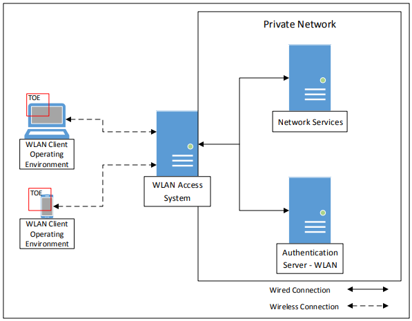

The scope of the Wireless Local Area Network (WLAN) Client PP-Module is to describe the security functionality of a WLAN Client in terms of [CC]
and to define functional and assurance requirements for such products. This PP-Module is intended for use with the following Base-PPs:
General Purpose Operating System (GPOS) Protection Profile, Version 4.2.1
Mobile Device Fundamentals (MDF) Protection Profile, Version 3.1
These Base-PPs are valid because a WLAN Client is
a part of either a commercial operating system that can be installed on a general-purpose computer or an operating system that runs on a purpose-built mobile device.
1.2 Terms
The following sections provide both Common Criteria (CC) and
technology terms used in this document.
1.2.1 Common Criteria Terms
Base Protection Profile (Base-PP)
Protection Profile used to build a PP-Configuration.
Common Criteria (CC)
Common Criteria for Information Technology Security Evaluation
(International Standard ISO/IEC 15408).
Common Criteria Testing Laboratory
Within the context of the Common Criteria Evaluation and Validation Scheme
(CCEVS), an IT security evaluation facility, accredited by the National Voluntary
Laboratory Accreditation Program (NVLAP) and approved by the NIAP Validation Body to
conduct Common Criteria-based evaluations.
Common Evaluation Methodology (CEM)
Common Evaluation Methodology for Information Technology Security
Evaluation.
Protection Profile (PP)
An implementation-independent set of security requirements for a category
of products.
A comprehensive set of security requirements for a product type that consists of at least one Base-PP and at least one PP-Module.
Protection Profile Module (PP-Module)
An implementation-independent statement of security needs for a TOE type
complementary to one or more Base Protection Profiles.
Security Functional Requirement (SFR)
A requirement for security enforcement by the TOE.
Security Target (ST)
A set of implementation-dependent security requirements for a specific
product.
Target of Evaluation (TOE)
The product under evaluation.
TOE Security Functionality (TSF)
The security functionality of the product under evaluation.
TOE Summary Specification (TSS)
A description of how a TOE satisfies the Security Functional Requirements (SFRs) in a Security Target (ST).
1.2.2 Technical Terms
AP (Access Point)
A device that provides the network interface that enables wireless client hosts to access a wired network.
Once authenticated as trusted nodes on the wired infrastructure, the APs provide the encryption service on
the wireless network between the wireless client and the radio frequency (RF) interface of the AP.
Administrator
A user that has administrative privilege to configure the TOE.
Authentication Server
A server on the wired network that receives authentication credentials from wireless clients and determines their validity.
Authentication Credentials
The information the system uses to verify that the user or administrator is
authorized to access the TOE or network. Credentials can exist in various forms, such as username/password or digital
certificates.
Critical Security Parameter
Security related information, e.g. secret and private cryptographic keys,
and authentication data such as passwords and Personal Identification Numbers (PINs), whose disclosure or modification can compromise the
security of a cryptographic module.
Entropy Source
A cryptographic function that provides a seed for a random number generator by accumulating
the outputs from one or more noise sources. The functionality includes a measure of the minimum work
required to guess a given output and tests to ensure that the noise sources are operating properly.
Extensible Authentication Protocol
An authentication framework, used in wireless networks, that uses Public Key Infrastructure (PKI) to authenticate both the authentication server and the wireless client.
FIPS-Approved Cryptographic Function
A cryptographic operation that is specified for use by FIPS 140.
IEEE 802.1X
A standard for port-based network access control that defines an authentication mechanism for WLAN Clients to attach to a wired network.
Unauthorized User
A user that has not been granted the ability to use the TOE.
1.3 Compliant Targets of Evaluation
This document specifies SFRs for a WLAN Client. The TOE defined
by this PP-Module is the WLAN Client, a component executing on a client machine (often referred to as
a "remote access client"). The TOE establishes a secure wireless tunnel between the client
device and a WLAN Access System through which all data will traverse.
A WLAN Client allows remote users to use client machines to establish wireless communication
with a private network through a WLAN Access System. IP packets passing between the
private network and a WLAN Client are encrypted. The WLAN Client protects the confidentiality and integrity of
data in transit between itself and the private network, even though it traverses a wireless connection.
The focus of the SFRs in this PP-Module is on the following fundamental
aspects of a WLAN Client:
Authentication of the WLAN Client
Authentication of the Authentication Server
Cryptographic protection of data in transit
Implementation of services
The WLAN Client establishes an 802.11 tunnel between the client device and the network
infrastructure using IEEE 802.1X with Extensible Authentication Protocol-Transport Layer Security (EAP-TLS) for authentication. It performs mutual
authentication to an AS in the private network as part of the EAP-TLS exchange. The EAP-TLS
exchange uses certificates for mutual authentication. The WLAN Client examines the machine
certificate transmitted from the AS, checks its validity, and ensures the certificate is signed by a
trusted Certificate Authority (CA). The AS will authenticate the WLAN Client certificate at the
same time. When the EAP-TLS exchange completes successfully, the network allows the WLAN
Client to finish establishing a secure communication tunnel to the private network. The WLAN
Client sets up an encrypted, authenticated channel to the WLAN Access System using a 4-way
handshake, as specified in IEEE 802.11. Once the channel is established, all communication
between the WLAN Client to the WLAN Access System is encrypted with Advanced Encryption Standard (AES) in
Cipher Block Chaining-Message Authentication Code Protocol (CCMP) mode and
optionally AES in Galois/Counter Mode Protocol (GCMP) mode, as specified in [802.11-2016].
1.3.1 TOE Boundary
The WLAN Client (Figure 1), as defined by this PP-Module, is a component executing on a remote access
client machine. Note the client is depicted as just a small portion of the WLAN client "machine."
As such, the TOE must rely heavily on the TOE’s operational environment (host platform,
network stack, and operating system) for its execution domain and its proper usage. The TOE
will rely on the IT environment to address much of the security functionality related to
administrative functions.
Figure 1:
WLAN Client Operating Environment
1.4 Use Cases
Requirements in this PP-Module are designed to
address the security problems in at least the following use cases. These use cases are intentionally
very broad, as many specific use cases exist within these larger categories.
[USE CASE 1] General-Purpose Operating System
This use case is for a WLAN Client TOE that is part of a general-purpose operating system. Specifically, the WLAN Client TOE is expected to be part of the operating system itself and not a standalone third-party application that
is installed on top of it.
[USE CASE 2] Mobile Device
This use case is for a WLAN Client TOE that is part of a mobile operating system that runs on a mobile device. Specifically, the WLAN Client TOE is expected to be part of the mobile operating system itself and not
a standalone third-party application that is acquired from the mobile vendor's application store.
2 Conformance Claims
Conformance Statement
This PP-Module inherits exact conformance as required from
the specified Base-PP and as defined in the CC and
CEM addenda for Exact Conformance, Selection-Based SFRs, and Optional
SFRs (dated May 2017).
The following PPs and PP-Modules are allowed to
be specified in a PP-Configuration with this PP-Module.
PP-Module for VPN Client, Version 2.1
CC Conformance Claims
This PP-Module is conformant to Parts 2 (extended) and 3
(conformant) of Common Criteria Version 3.1, Release 5 [CC].
Package Claims
There are no package claims for this PP-Module.
3 Security Problem Description
This PP-Module is written to address the situation when an entity desires wireless access to a private
network. To allow access to the private network, the entity (machine) must be authenticated
before a secure communications channel can be established. The TOE is the entity that seeks to
be authenticated and be given access to services offered by the protected network and is the
Supplicant in the IEEE 802.1X framework.
3.1 Threats
The following threats are specific to WLAN Clients, and represent an addition to those identified in the Base-PPs.
T.TSF_FAILURE
Security mechanisms of the TOE generally build up from a primitive set of mechanisms (e.g.,
memory management, privileged modes of process execution) to more complex sets of
mechanisms. Failure of the primitive mechanisms could lead to a compromise in more complex
mechanisms, resulting in a compromise of the TSF.
T.UNAUTHORIZED_ACCESS
A user may gain unauthorized access to the TOE data and TOE executable code. A malicious
user, process, or external IT entity may masquerade as an authorized entity in order to gain
unauthorized access to data or TOE resources. A malicious user, process, or external IT entity
may misrepresent itself as the TOE to obtain identification and authentication data.
T.UNDETECTED_ACTIONS
Malicious remote users or external IT entities may take actions that adversely affect the
security of the TOE. These actions may remain undetected and thus their effects cannot be
effectively mitigated.
3.2 Assumptions
These assumptions are made on the Operational Environment in order to be able to ensure that the
security functionality specified in the PP-Module can be provided by the TOE. If the TOE is placed in an
Operational Environment that does not meet these assumptions, the TOE may no longer be able to
provide all of its security functionality.
A.NO_TOE_BYPASS
Information cannot flow between the wireless client and the internal wired
network without passing through the TOE.
A.TRUSTED_ADMIN
TOE Administrators are trusted to follow and apply all administrator guidance in
a trusted manner.
3.3 Organizational Security Policies
No organizational policies have been identified that are specific to WLAN Clients. However, any
organizational security policies defined in the Base-PPs will also apply to WLAN Clients.
4 Security Objectives
4.1 Security Objectives for the TOE
O.AUTH_COMM
The TOE will provide a means to ensure that it is
communicating with an authorized Access Point and
not some other entity pretending to be an authorized
Access Point, and will provide assurance to the Access
Point of its identity. Addressed by: FCS_TLSC_EXT.1/WLAN, FCS_TLSC_EXT.2/WLAN (selection-based), FIA_PAE_EXT.1, FIA_X509_EXT.2/WLAN, FTP_ITC_EXT.1/WLAN
O.CRYPTOGRAPHIC_FUNCTIONS
The TOE will provide or use cryptographic functions
(i.e., encryption/decryption and digital signature
operations) to maintain the confidentiality and allow
for detection of modification of data that are
transmitted outside the TOE and its host
environment. Addressed by: FCS_CKM.1/WLAN, FCS_CKM.2/WLAN, FCS_CKM_EXT.4 (if GPOS is Base-PP), FCS_CKM_EXT.4 (if MDF is Base-PP), FCS_COP.1(1) (from either Base-PP), FCS_COP.1(2) (from either Base-PP), FCS_COP.1(3) (from either Base-PP), FCS_COP.1(4) (from either Base-PP), FCS_RBG_EXT.1 (from either Base-PP)
O.SELF_TEST
The TOE will provide the capability to test some
subset of its security functionality to ensure it is operating properly. Addressed by: FPT_TST_EXT.1/WLAN
O.SYSTEM_MONITORING
The TOE will provide the capability to generate audit
data. Addressed by: FAU_GEN.1/WLAN
O.TOE_ADMINISTRATION
The TOE will provide mechanisms to allow
administrators to be able to configure the TOE. Addressed by: FIA_X509_EXT.4 (optional), FMT_SMF.1/WLAN
O.WIRELESS_ACCESS_POINT_CONNECTION
The TOE will provide the capability to restrict the
wireless access points to which it will connect. Addressed by: FTA_WSE_EXT.1
4.2 Security Objectives for the Operational Environment
The Operational Environment of the TOE implements technical and procedural measures to assist the TOE in correctly providing its security functionality (which is defined by the security objectives for the TOE).
The security objectives for the Operational Environment consist of a set of statements describing the goals that the Operational Environment should achieve.
This section defines the security objectives that are to be addressed by the IT domain or by non-technical or procedural means. The assumptions identified in Section 3 are incorporated as security objectives for the environment.
OE.NO_TOE_BYPASS
Information cannot flow between external and internal networks located
in different enclaves without passing through the TOE.
OE.TRUSTED_ADMIN
TOE administrators are trusted to follow and apply all administrator
guidance in a trusted manner.
4.3 Security Objectives Rationale
This section describes how the assumptions, threats, and organization security policies map to the security objectives.
Threat, Assumption, or OSP
Security Objectives
Rationale
T.TSF_FAILURE
O.TSF_SELF_TEST
The threat T.TSF_FAILURE is mitigated by O.TSF_SELF_TEST as this defines a mechanism for ensuring the reliability of the TSF by detecting potential failure conditions.
The threat T.UNAUTHORIZED_ACCESS is mitigated in part by O.AUTH_COMM by ensuring the authenticity of any remote endpoint that the TSF connects to. The threat T.UNAUTHORIZED_ACCESS is mitigated in part by O.CRYPTOGRAPHIC_FUNCTIONS by ensuring the confidentiality and integrity of data in transit to protect against man-in-the-middle attacks. The threat T.UNAUTHORIZED_ACCESS is mitigated in part by O.TOE_ADMINISTRATION by using the TOE platform's authentication mechanism to ensure that only authorized administrators can configure the TOE's behavior. The threat T.UNAUTHORIZED_ACCESS is mitigated in part by this objective because it provides a mechanism to restrict the remote entities that the TOE is permitted to communicate with.
T.UNDETECTED_ACTIONS
O.SYSTEM_MONITORING
The threat T.UNDETECTED_ACTIONS is mitigated by O.SYSTEM_MONITORING by enforcing an auditing mechanism that can be used to track security-relevant TOE behavior.
A.NO_TOE_BYPASS
OE.NO_TOE_BYPASS
The Operational Environment objective OE.NO_TOE_BYPASS is realized through A.NO_TOE_BYPASS.
A.TRUSTED_ADMIN
OE.TRUSTED_ADMIN
The Operational Environment objective OE.TRUSTED ADMIN is realized through A.TRUSTED_ADMIN.
5 Security Requirements
This chapter describes the security requirements
which have to be fulfilled by the product under evaluation. Those requirements comprise functional
components from Part 2 and assurance components from Part 3 of [CC]. The
following notations are used:
Refinement operation (denoted by bold text or strikethrough
text): is used to add details to a requirement (including replacing an assignment
with a more restrictive selection) or to remove part of the requirement that is made irrelevant
through the completion of another operation, and thus further restricts a requirement.
Selection (denoted by italicized text): is used to select one or more options
provided by the [CC] in stating a requirement.
Assignment operation (denoted by italicized text): is used to assign a
specific value to an unspecified parameter, such as the length of a password. Showing the
value in square brackets indicates assignment.
Iteration operation: are identified with a number inside parentheses (e.g.
"(1)")
5.1 GPOS
PP Security Functional Requirements Direction
In a PP-Configuration that includes GPOS PP, the TOE is expected to rely on some of the security functions implemented by the Operating System as a whole and evaluated against the GPOS PP.
The following sections describe any modifications that the ST author must make to the SFRs
defined in the GPOS PP in addition to what is mandated by section 5.3.
5.1.1
Modified SFRs
The SFRs listed in this section are defined in the GPOS Protection Profile and relevant to the secure operation of the TOE.
5.1.1.1 Cryptographic Support (FCS)
FCS_CKM_EXT.4 Cryptographic Key Destruction
Application Note: This SFR exists in the GPOS PP and does not need to be modified for this PP-Module. Note
however that its scope is expanded to include keys and key material that are used by the TSF
described by this PP-Module. This SFR has not been iterated because it is assumed that the key
destruction function is at least partially implemented by the underlying platform as opposed to
the WLAN Client itself. For the purposes of this requirement, it is sufficient for the TOE to invoke
the correct underlying functions of the host to perform the zeroization—it does not imply that
the TOE has to include a kernel-mode memory driver to ensure the data are zeroized.
Any security related information (such as keys, authentication data, and passwords) must be
zeroized when no longer in use to prevent the disclosure or modification of security critical data.
The zeroization indicated above applies to each intermediate storage area for plaintext key or CSP
(i.e., any storage, such as memory buffers, that is included in the path of such data) upon the
transfer of the key or CSP to another location.
Additionally, although IEEE 802.11-2016 does not specify Pairwise Master Key (PMK) lifetimes (described in IEEE
802.11-2016 Section 11.6.1.3) for WLAN Clients, these lifetimes should be limited, and the
PMK Security Association (PMKSA) cleared, in such a way as to prevent continued use of the same PMK for more than 24
hours. Thus, for PMKs, “when no longer needed” is after 24 hours.
FCS_COP.1 Cryptographic Operation
Application Note: Several iterations of this SFR exist in the GPOS PP and do not need to be
modified for this PP-Module. Note however that their scope is expanded to include cryptographic
operations that are required by the WLAN Client in order to perform its security functionality.
FCS_RBG_EXT.1 Random Bit Generation
Application Note: This SFR exists in the GPOS PP and does not need to be modified for this PP-Module. Note
however that its scope is expanded to include random bit generation functions that are required
by the WLAN Client in order to perform its security functionality.
5.1.2
Additional SFRs
This PP-Module does not define any additional SFRs for any PP-Configuration where the GPOS PP is claimed as the Base-PP.
5.2 MDF
PP Security Functional Requirements Direction
In a PP-Configuration that includes MDF PP, the TOE is expected to rely on some of the security functions implemented by the Mobile Device as a whole and evaluated against the MDF PP.
The following sections describe any modifications that the ST author must make to the SFRs
defined in the MDF PP in addition to what is mandated by section 5.3.
5.2.1
Modified SFRs
The SFRs listed in this section are defined in the MDF Protection Profile and relevant to the secure operation of the TOE.
5.2.1.1 Cryptographic Support (FCS)
FCS_CKM_EXT.4 Key Destruction
Application Note: This SFR exists in the MDF PP and does not need to be modified for this PP-Module. Note
however that its scope is expanded to include keys and key material that are used by the TSF
described by this PP-Module. This SFR has not been iterated because it is assumed that the key
destruction function is at least partially implemented by the underlying platform as opposed to
the WLAN Client itself. For the purposes of this requirement, it is sufficient for the TOE to invoke
the correct underlying functions of the host to perform the zeroization—it does not imply that
the TOE has to include a kernel-mode memory driver to ensure the data are zeroized.
Any security related information (such as keys, authentication data, and passwords) must be
zeroized when no longer in use to prevent the disclosure or modification of security critical data.
The zeroization indicated above applies to each intermediate storage area for plaintext key or CSP
(i.e., any storage, such as memory buffers, that is included in the path of such data) upon the
transfer of the key or CSP to another location.
Additionally, although IEEE 802.11-2016 does not specify PMK lifetimes (described in IEEE
802.11-2016 Section 11.6.1.3) for WLAN Clients, these lifetimes should be limited, and the
PMKSA cleared, in such a way as to prevent continued use of the same PMK for more than 24
hours. Thus, for PMKs, “when no longer needed” is after 24 hours.
FCS_COP.1 Cryptographic Operation
Application Note: Several iterations of this SFR exist in the MDF PP and do not need to be
modified for this PP-Module. Note however that their scope is expanded to include cryptographic
operations that are required by the WLAN Client in order to perform its security functionality.
FCS_RBG_EXT.1 Random Bit Generation
Application Note: This SFR exists in the MDF PP and does not need to be modified for this PP-Module. Note
however that its scope is expanded to include random bit generation functions that are required
by the WLAN Client in order to perform its security functionality.
5.2.2
Additional SFRs
This PP-Module does not define any additional SFRs for any PP-Configuration where the MDF PP is claimed as the Base-PP.
5.3 TOE Security Functional Requirements
The following section describes the SFRs that must be satisfied by any TOE that claims conformance to this PP-Module.
These SFRs must be claimed regardless of which PP-Configuration is used to define the TOE.
5.3.1 Security Audit (FAU)
FAU_GEN.1/WLAN Audit Data Generation (Wireless LAN)
The TSF shall
[selection: invoke platform-provided functionality, implement functionality]
to generate an audit record of the following auditable events:
Startup and shutdown of the audit functions;
All auditable events for [not specified] level of audit; and
[all auditable events specified in the Auditable Events table].
Application Note: If auditing for the WLAN Client cannot be controlled separately from its underlying platform,
the "Startup and shutdown of the audit functions" event defined in each Base-PP is sufficient to address that event for this iteration of the SFR.
The Auditable Events table includes auditable events for SFRs that are not mandatory. If the TOE does not claim a particular non-mandatory SFR, it is not expected to
generate any corresponding audit records for that SFR.
The Auditable Events table includes auditable events for FPT_TST_EXT.1/WLAN. If the TOE does not perform its own self-tests (i.e., "TOE platform" is selected in FPT_TST_EXT.1.1/WLAN and FPT_TST_EXT.1.2/WLAN),
the audit record for this event may also be generated by the TOE platform.
Table 1 Auditable Events
Requirement
Auditable Events
Additional Audit Record Contents
FAU_GEN.1/WLAN
None.
FCS_CKM.1/WLAN
None.
FCS_CKM.2/WLAN
None.
FCS_TLSC_EXT.1/WLAN
Failure to establish an EAP-TLS session.
Reason for failure.
Non-TOE endpoint of connection.
Establishment/termination of an EAP-TLS session.
Non-TOE endpoint of connection.
FCS_TLSC_EXT.2/WLAN
None.
FIA_PAE_EXT.1
None.
FIA_X509_EXT.2/WLAN
None.
FIA_X509_EXT.4
Attempts to load certificates.
None.
Attempts to revoke certificates.
None.
FMT_SMF.1/WLAN
None.
FPT_TST_EXT.1/WLAN
Execution of this set of TSF self-tests.
None.
[selection: Detected integrity violation., None.]
[selection: The TSF binary file that caused the integrity violation., None.]
FTA_WSE_EXT.1
All attempts to connect to access points.
Identity of access point being connected to.
Success and failures (including reason for failure).
FTP_ITC_EXT.1/WLAN
All attempts to establish a trusted channel.
Identification of the non-TOE endpoint of the channel.
The [selection: TSF, TOE platform] shall record within each audit record at
least the following information:
Date and time of the event, type of event, subject identity, (if relevant) the outcome
(success or failure) of the event; and
For each audit event type, based on the auditable event definitions of the functional components
included in the PP-Module/ST, [Additional Audit Record Contents as specified in Auditable Events table].
The evaluator shall check the TSS and ensure it provides a format for audit records. Each audit record format type must be covered, along with a brief description of each field.
If "invoke platform-provided functionality" is selected, the evaluator shall examine the TSS to verify it describes (for each supported platform) how this functionality is invoked
(it should be noted that this may be through a mechanism that is not implemented by the WLAN Client; however, that mechanism will be identified in the TSS as part of this evaluation activity).
Guidance
The evaluator shall check the operational guidance and ensure it lists all of the auditable
events and provides a format for audit records. Each audit record format type must be
covered, along with a brief description of each field. The evaluator shall check to make sure
that every audit event type mandated by the PP-Module is described and that the description of the
fields contains the information required in FAU_GEN.1.2/WLAN, and the additional information
specified in the Auditable Events table.
The evaluator shall in particular ensure that the operational guidance is clear in relation to the
contents for failed cryptographic events. In the Auditable Events table, information detailing the cryptographic
mode of operation and a name or identifier for the object being encrypted is required. The
evaluator shall ensure that name or identifier is sufficient to allow an administrator reviewing
the audit log to determine the context of the cryptographic operation (for example,
performed during a key negotiation exchange, performed when encrypting data for transit) as
well as the non-TOE endpoint of the connection for cryptographic failures relating to
communications with other IT systems.
The evaluator shall also make a determination of the administrative actions that are relevant
in the context of this PP-Module. The TOE may contain functionality that is not evaluated in the
context of this PP-Module because the functionality is not specified in an SFR. This functionality may
have administrative aspects that are described in the operational guidance. Since such
administrative actions will not be performed in an evaluated configuration of the TOE, the
evaluator shall examine the operational guidance and make a determination of which
administrative commands, including subcommands, scripts, and configuration files, are related
to the configuration (including enabling or disabling) of the mechanisms implemented in the
TOE that are necessary to enforce the requirements specified in the PP-Module, which thus form the
set of “all administrative actions”. The evaluator may perform this activity as part of the
activities associated with ensuring the AGD_OPE guidance satisfies the requirements.
Tests
The evaluator shall test the TOE’s ability to correctly generate audit records by having the TOE
generate audit records in accordance with the assurance activities associated with the
functional requirements in this PP-Module. When verifying the test results, the evaluator shall ensure
the audit records generated during testing match the format specified in the administrative
guide, and that the fields in each audit record have the proper entries.
Note that the testing here can be accomplished in conjunction with the testing of the security
mechanisms directly. For example, testing performed to ensure that the administrative
guidance provided is correct verifies that AGD_OPE.1 is satisfied and should address the
invocation of the administrative actions that are needed to verify the audit records are
generated as expected.
5.3.2 Cryptographic Support (FCS)
The cryptographic requirements are also structured to require the use of the Wi-Fi certification
requirements for WPA2 enterprise, based on the IEEE 802.11 standard. The Wi-Fi Alliance
WPA2 Enterprise certification program tests devices for data communications interoperability
at ISO OSI layers 1 and 2, and mandates the use of the AES-CCMP algorithm for secure connections. Optionally, AES-GCMP can be used.
FCS_CKM.1/WLAN Cryptographic Key Generation (Symmetric Keys for WPA2 Connections)
The TSF shall generate symmetric cryptographic keys in accordance with a specified cryptographic key generation algorithm [PRF-384 and
[selection: PRF-704, no other algorithm]
(as defined in IEEE 802.11-2016)] and specified key sizes [128 bits and
[selection: 256 bits, no other key sizes]] using a Random Bit Generator as specified in FCS_RBG_EXT.1.
Application Note: The cryptographic key derivation algorithm required by IEEE 802.11-2012
(Section 11.6.1.2) and verified in WPA2 certification is PRF-384, which uses the HMAC-SHA-1
function and outputs 384 bits. The use of GCMP was first defined in IEEE 802.11ac-2014 (Section
11.4.5) but subsequently integrated into 802.11-2016. This protocol requires a key derivation function (KDF)
KDF based on HMAC-SHA-256 (for 128-bit symmetric keys) or HMAC-SHA384 (for 256-bit symmetric keys). This KDF outputs 704 bits.
This requirement applies only to the keys that are generated/derived for the communications
between the access point and the client once the client has been authenticated. It refers to the
derivation of the Pairwise Temporal Key (PTK) from the PMK, which is done using a random value generated by the RBG
specified in this PP-Module, the HMAC function using SHA-1 as specified in this PP-Module, as well as other
information. This is specified in 802.11-2012 primarily in section 11.6.1.2.
The evaluator shall verify that the TSS describes how the primitives defined and implemented
by this PP-Module are used by the TOE in establishing and maintaining secure connectivity to the
wireless clients. The TSS shall also provide a description of the developer’s method(s) of
assuring that their implementation conforms to the cryptographic standards; this includes not
only testing done by the developing organization, but also any third-party testing that is
performed.
Guidance
There are no guidance evaluation activities for this component.
Tests
The evaluator shall perform the following tests:
Test 1:
The evaluator shall configure the access point so the cryptoperiod of the
session key is 1 hour. The evaluator shall successfully connect the TOE to the access
point and maintain the connection for a length of time that is greater than the
configured cryptoperiod. The evaluator shall use a packet capture tool to determine
that after the configured cryptoperiod, a re-negotiation is initiated to establish a new
session key. Finally, the evaluator shall determine that the renegotiation has been
successful and the client continues communication with the access point.
Test 2: The evaluator shall perform the following test using a packet sniffing tool to
collect frames between the TOE and a wireless LAN access point:
Step 1: The evaluator shall configure the access point to an unused channel and
configure the WLAN sniffer to sniff only on that channel (i.e., lock the sniffer on the
selected channel). The sniffer should also be configured to filter on the MAC address
of the TOE and/or access point.
Step 2: The evaluator shall configure the TOE to communicate with a WLAN access
point using IEEE 802.11-2016 and a 256-bit (64 hex values 0-f) pre-shared key. The
pre-shared key is only used for testing.
Step 3: The evaluator shall start the sniffing tool, initiate a connection between the
TOE and the access point, and allow the TOE to authenticate, associate, and
successfully complete the 4-way handshake with the client.
Step 4: The evaluator shall set a timer for 1 minute, at the end of which the evaluator
shall disconnect the TOE from the wireless network and stop the sniffer.
Step 5: The evaluator shall identify the 4-way handshake frames (denoted EAPOL-key
in Wireshark captures) and derive the PTK from the 4-way handshake frames and preshared key as specified in IEEE 802.11-2016.
Step 6: The evaluator shall select the first data frame from the captured packets that
was sent between the TOE and access point after the 4-way handshake successfully
completed, and without the frame control value 0x4208 (the first 2 bytes are 08 42).
The evaluator shall use the PTK to decrypt the data portion of the packet as specified
in IEEE 802.11-2016, and shall verify that the decrypted data contains ASCII-readable
text.
Step 7: The evaluator shall repeat Step 6 for the next 2 data frames between the TOE
and access point and without frame control value 0x4208.
FCS_CKM.2/WLAN Cryptographic Key Distribution (Group Temporal Key for WLAN)
The TSF shall decrypt Group Temporal Key in accordance with a specified cryptographic key distribution method
[AES Key Wrap (as defined in RFC 3394) in an EAPOL-Key frame (as defined in IEEE 802.11-2016 for the packet format and timing considerations] and does not expose the cryptographic keys.
Application Note: This requirement applies to the Group Temporal Key (GTK) that is received by
the TOE for use in decrypting broadcast and multicast messages from the Access Point to which
it's connected. 802.11-2016 specifies the format for the transfer as well as the fact that it must be wrapped by the AES Key Wrap method specified in RFC 3394; the TOE must be capable of
unwrapping such keys.
The evaluator shall check the TSS to ensure that it describes how the GTK is unwrapped prior to
being installed for use on the TOE using the AES implementation specified in this PP-Module.
Guidance
There are no guidance evaluation activities for this component.
Tests
The evaluator shall perform the following test using a packet sniffing tool to collect frames
between the TOE and a wireless access point (which may be performed in conjunction with the
assurance activity for FCS_CKM.1.1/WLAN).
Step 1: The evaluator shall configure the access point to an unused channel and configure the
WLAN sniffer to sniff only on that channel (i.e., lock the sniffer on the selected channel). The
sniffer should also be configured to filter on the MAC address of the TOE and/or access point.
Step 2: The evaluator shall configure the TOE to communicate with the access point using IEEE
802.11-2016 and a 256-bit (64 hex values 0-f) pre-shared key, setting up the connections as
described in the operational guidance. The pre-shared key is only used for testing.
Step 3: The evaluator shall start the sniffing tool, initiate a connection between the TOE and
access point, and allow the TOE to authenticate, associate, and successfully complete the 4-way
handshake with the TOE.
Step 4: The evaluator shall set a timer for 1 minute, at the end of which the evaluator shall
disconnect the TOE from the access point and stop the sniffer.
Step 5: The evaluator shall identify the 4-way handshake frames (denoted EAPOL-key in
Wireshark captures) and derive the PTK and GTK from the 4-way handshake frames and preshared key as specified in IEEE 802.11-2016.
Step 6: The evaluator shall select the first data frame from the captured packets that was sent
between the TOE and access point after the 4-way handshake successfully completed, and with
the frame control value 0x4208 (the first 2 bytes are 08 42). The evaluator shall use the GTK to
decrypt the data portion of the selected packet as specified in IEEE 802.11-2016, and shall verify
that the decrypted data contains ASCII-readable text.
Step 7: The evaluator shall repeat Step 6 for the next 2 data frames with frame control value
0x4208.
FCS_TLSC_EXT.1/WLAN TLS Client Protocol (EAP-TLS for WLAN)
The TSF shall implement TLS 1.2 (RFC 5246) and
[selection: TLS 1.1 (RFC 4346), no other TLS version] in support of the EAP-TLS protocol as specified in RFC 5216 supporting the following cipher suites:
[selection:
TLS_RSA_WITH_AES_128_CBC_SHA as defined in RFC 3268,
TLS_RSA_WITH_AES_256_CBC_SHA as defined in RFC 3268,
TLS_DHE_RSA_WITH_AES_128_CBC_SHA as defined in RFC 3268,
TLS_DHE_RSA_WITH_AES_256_CBC_SHA as defined in RFC 3268,
TLS_ECDHE_RSA_WITH_AES_128_CBC_SHA as defined in RFC 4492,
TLS_ECDHE_RSA_WITH_AES_256_CBC_SHA as defined in RFC 4492,
TLS_ECDHE_ECDSA_WITH_AES_128_CBC_SHA as defined in RFC 4492,
TLS_ECDHE_ECDSA_WITH_AES_256_CBC_SHA as defined in RFC 4492,
TLS_RSA_WITH_AES_128_CBC_SHA256 as defined in RFC 5246,
TLS_RSA_WITH_AES_256_CBC_ SHA256 as defined in RFC 5246,
TLS_DHE_RSA_WITH_AES_128_CBC_ SHA256 as defined in RFC 5246,
TLS_DHE_RSA_WITH_AES_256_CBC_ SHA256 as defined in RFC 5246,
TLS_RSA_WITH_AES_128_GCM_SHA256 as defined in RFC 5288,
TLS_RSA_WITH_AES_256_GCM_SHA384 as defined in RFC 5288,
TLS_DHE_RSA_WITH_AES_128_GCM_SHA256 as defined in RFC 5288,
TLS_DHE_RSA_WITH_AES_256_GCM_SHA384 as defined in RFC 5288,
TLS_ECDHE_ECDSA_WITH_AES_128_CBC_SHA256 as defined in RFC 5289,
TLS_ECDHE_ECDSA_WITH_AES_256_CBC_SHA384 as defined in RFC 5289,
TLS_ECDHE_ECDSA_WITH_AES_128_GCM_SHA256 as defined in RFC 5289,
TLS_ECDHE_ECDSA_WITH_AES_256_GCM_SHA384 as defined in RFC 5289,
TLS_ECDHE_RSA_WITH_AES_128_GCM_SHA256 as defined in RFC 5289,
TLS_ECDHE_RSA_WITH_AES_256_GCM_SHA384 as defined in RFC 5289,
TLS_ECDHE_RSA_WITH_AES_128_CBC_SHA256 as defined in RFC 5289,
TLS_ECDHE_RSA_WITH_AES_256_CBC_SHA384 as defined in RFC 5289
].
Application Note: If any of the ECDHE cipher suites are selected by the ST author, it is necessary
to claim the selection-based requirement FCS_TLSC_EXT.2/WLAN.
The TSF shall verify that the server certificate presented includes the
Server Authentication purpose (id-kp 1 with OID 1.3.6.1.5.5.7.3.1) in the extendedKeyUsage
field.
The TSF shall allow an authorized administrator to configure the list
of CAs that are allowed to sign authentication server certificates that are accepted by the TOE.
The TSF shall allow an authorized administrator to configure the list
of algorithm suites that may be proposed and accepted during the EAP-TLS exchanges.
Application Note: The cipher suites to be tested in the evaluated configuration are limited by this
requirement. The ST author should select the optional cipher suites that are supported.
It is necessary to limit the cipher suites that can be used in an evaluated configuration
administratively on the server in the test environment.
While FCS_TLSC_EXT.1.4/WLAN requires that the TOE perform certain checks on the certificate
presented by the authentication server, there are corresponding checks that the authentication
server will have to perform on the certificate presented by the client; namely that the
extendedKeyUsage field of the client certificate includes "Client Authentication" and that the
digital signature bit (for the Diffie-Hellman cipher suites) or the key encipherment bit (for RSA
cipher suites) be set. Certificates obtained for use by the TOE will have to conform to these
requirements in order to be used in the enterprise.
The FIA_X509_EXT.1 requirements defined in each of the possible Base-PPs define requirements that
the underlying platform is expected to implement.
The evaluator shall check the description of the implementation of this protocol in the TSS to
ensure that the cipher suites supported are specified. The evaluator shall check the TSS to ensure
that the cipher suites specified include those listed for this component.
Guidance
The evaluator shall check the operational guidance to ensure that it contains instructions on
configuring the TOE so that TLS conforms to the description in the TSS (for instance, the set of
cipher suites advertised by the TOE may have to be restricted to meet the requirements).
The evaluator shall check that the guidance contains instructions for the administrator to
configure the list of Certificate Authorities that are allowed to sign certificates used by the
authentication server that will be accepted by the TOE in the EAP-TLS exchange, and instructions
on how to specify the algorithm suites that will be proposed and accepted by the TOE during the
EAP-TLS exchange.
Tests
The evaluator shall write, or the TOE developer shall provide, an application for the purposes of
testing TLS.
The evaluator shall perform the following tests:
Test 1: The evaluator shall establish a TLS connection using each of the cipher suites
specified by the requirement. This connection may be established as part of the
establishment of a higher-level protocol, e.g., as part of an EAP session. It is sufficient to
observe the successful negotiation of a cipher suite to satisfy the intent of the test; it is
not necessary to examine the characteristics of the encrypted traffic in an attempt to
discern the cipher suite being used (for example, that the cryptographic algorithm is 128-bit
AES and not 256-bit AES).
Test 2:
The evaluator shall attempt to establish the connection using a server with a
server certificate that contains the Server Authentication purpose in the
extendedKeyUsage field and verify that a connection is established. The evaluator will
then verify that the client rejects an otherwise valid server certificate that lacks the
Server Authentication purpose in the extendedKeyUsage field and a connection is not
established. Ideally, the two certificates should be identical except for the
extendedKeyUsage field.
Test 3:
The evaluator shall send a server certificate in the TLS connection that does not
match the server-selected cipher suite (for example, send a ECDSA certificate while using
the TLS_RSA_WITH_AES_128_CBC_SHA cipher suite or send a RSA certificate while using
one of the ECDSA cipher suites.) The evaluator shall verify that the TOE disconnects after
receiving the server’s Certificate handshake message.
Test 4:
The evaluator shall configure the server to select the
TLS_NULL_WITH_NULL_NULL cipher suite and verify that the client denies the
connection.
Test 5:
The evaluator shall perform the following modifications to the traffic:
Change the TLS version selected by the server in the Server Hello to a nonsupported TLS version (for example 1.5 represented by the two bytes 03 06) and
verify that the client rejects the connection.
Modify at least one byte in the server’s nonce in the Server Hello handshake
message, and verify that the client rejects the Server Key Exchange handshake
message (if using a DHE or ECDHE cipher suite) or that the server denies the
client’s Finished handshake message.
Modify the server’s selected cipher suite in the Server Hello handshake message
to be a cipher suite not presented in the Client Hello handshake message. The
evaluator shall verify that the client rejects the connection after receiving the
Server Hello.
[conditional: the TOE supports at least one cipher suite that uses DHE or ECDHE for key exchange]
Modify the signature block in the Server’s Key
Exchange handshake message, and verify that the client rejects the
connection after receiving the Server Key Exchange message. This test
does not apply to cipher suites using RSA key exchange.
Modify a byte in the Server Finished handshake message, and verify
that the client sends an Encrypted Message followed by a FIN and
ACK message. This is sufficient to deduce that the TOE responded
with a Fatal Alert and no further data would be sent.
Send a garbled message from the server after the server has issued the
ChangeCipherSpec message and verify that the client denies the connection.
5.3.3 Identification and Authentication (FIA)
The baseline requirements for the TOE are fairly limited with respect to I&A, since no formal
administrative or general purpose users are defined. The extent of the I&A required to be
performed by the TOE relates to the process of becoming connected to the protected network
through the Wireless Access System. Additionally, some of the requirements that might
normally be considered part of the I&A process are specified in other sections of this PP-Module,
particularly those related to cryptographic protocols used for the wireless communications
(WPA2). This was done to keep requirements on those protocols grouped together for
understandability as well as for ease of authoring and applying assurance activities. Therefore,
the requirements in this section cover the remaining two aspects of the I&A capabilities the
TOE must support:
802.1X-2010 Authentication. The 802.1X-2010 standard (and associated RFCs) specifies
authentication of a machine for the purposes of accessing a network. This method is
used as a precursor to wireless operations using the 802.11-2016 standard. While
802.1X contains requirements for several different parties that participate in 802.1X
exchanges, the requirements below are targeted at the TOE’s role as a “supplicant” per
802.1X.
Credentials. The protocols and mechanisms specified in this and other sections of the PP-Module
rely on certificates for use in the EAP-TLS exchange in performing the 802.1X
authentication.
The TSF shall conform to IEEE Standard 802.1X for a Port Access Entity (PAE)
in the “Supplicant” role.
Application Note:
This requirement covers the TOE's role as the supplicant in an 802.1X
authentication exchange. If the exchange is completed successfully, the TOE will derive the PMK
as a result of the EAP-TLS (or other appropriate EAP exchange) and perform the 4-way
handshake with the wireless access system (authenticator) to begin 802.11 communications.
As indicated previously, there are at least two communication paths present during the
exchange; one with the wireless access system and one with the authentication server that uses
the wireless access system as a relay. The TOE establishes an EAP over LAN (EAPOL) connection
with the wireless access system as specified in 802.1X-2010. The TOE and authentication server
establish an EAP-TLS session (RFC 5216).
The point of performing 802.1X authentication is to gain access to the network (assuming the
authentication was successful and that all 802.11 negotiations are performed successfully); in
the terminology of 802.1X, this means the TOE will gain access to the "controlled port" maintained
by the wireless access system.
There are no TSS evaluation activities for this component.
Guidance
There are no guidance evaluation activities for this component.
Tests
The evaluator shall perform the following tests:
Test 1:
The evaluator shall demonstrate that the TOE has no access to the test network.
After successfully authenticating with an authentication server through a wireless access
system, the evaluator shall demonstrate that the TOE does have access to the test
network.
Test 2:
The evaluator shall demonstrate that the TOE has no access to the test network.
The evaluator shall attempt to authenticate using an invalid client certificate, such that
the EAP-TLS negotiation fails. This should result in the TOE still being unable to access
the test network.
Test 3:
The evaluator shall demonstrate that the TOE has no access to the test network.
The evaluator shall attempt to authenticate using an invalid authentication server
certificate, such that the EAP-TLS negotiation fails. This should result in the TOE still
being unable to access the test network.
FIA_X509_EXT.2/WLAN X.509 Certificate Authentication (EAP-TLS for WLAN)
The TSF shall use X.509v3 certificates as defined by RFC 5280 to
support [[authentication for EAP-TLS exchanges]].
Application Note:
RFC 5280 defines certificate validation and certification path validation
requirements that must be implemented by the TSF. The FIA_X509_EXT.1 requirements defined
in each of the supported Base-PPs define requirements that the underlying platform is expected to
implement in order to support compliance with this RFC.
When the TSF cannot establish a connection to determine the validity of a
certificate, the TSF shall
[selection: allow the administrator to choose whether to accept the certificate in these cases, allow the user to choose whether to accept the certificate in these cases, accept the certificate, not accept the certificate].
The evaluator shall check the TSS to ensure that it describes how the TOE chooses which
certificates to use, and any necessary instructions in the administrative guidance for configuring
the operational environment so that the TOE can use the certificates.
The evaluator shall examine the TSS to confirm that it describes the behavior of the TOE when a
connection cannot be established during the validity check of a certificate used in establishing a
trusted channel. The evaluator shall verify that any distinctions between trusted channels are
described. If the requirement that the administrator is able to specify the default action, then
the evaluator shall ensure that the operational guidance contains instructions on how this
configuration action is performed.
Guidance
The evaluator shall check the administrative guidance to ensure that it describes how the TOE
chooses which certificates to use, and any necessary instructions for configuring the operating
environment so that the TOE can use the certificates.
Tests
The evaluator shall perform the following test:
Test 1:
The evaluator shall demonstrate using a valid certificate that requires certificate validation
checking to be performed in at least some part by communicating with a non-TOE IT entity. The
evaluator shall then manipulate the environment so that the TOE is unable to verify the validity
of the certificate, and observe that the action selected in FIA_X509_EXT.2.2 is performed. If the
selected action is administrator-configurable, then the evaluator shall follow the operational
guidance to determine that all supported administrator-configurable options behave in their
documented manner.
5.3.4 Security Management (FMT)
As indicated in Section 1, the TOE is not required to maintain a separate management
role. It is, however, required to provide functionality to configure certain aspects of TOE
operation that should not be available to the general user population. If the TOE does provide
some degree of administrative control, then the appropriate optional requirements
should be claimed in the ST.
FMT_SMF.1/WLAN Specification of Management Functions (WLAN Client)
The TSF shall be capable of performing the following management functions: [
configure security policy for each wireless network:
[selection: specify the CA(s) from which the TSF will accept WLAN authentication server certificate(s),, specify the Fully Qualified Domain Names (FQDNs) of acceptable WLAN authentication server certificate(s),],
security type,
authentication protocol,
client credentials to be used for authentication
[selection:
specify wireless networks (SSIDs) to which the TSF may connect,
enable/disable certificate revocation list checking,
disable ad hoc wireless client-to-client connection capability,
disable wireless network bridging capability (for example, bridging a
connection between the WLAN and cellular radios on a smartphone so it can function as
a hotspot),
disable roaming capability,
enable/disable IEEE 802.1X pre-authentication,
loading X.509 certificates into the TOE,
revoke X.509 certificates loaded into the TOE,
enable/disable and configure PMK caching:
set the amount of time (in minutes) for which PMK entries are cached,
set the maximum number of PMK entries that can be cached
]].
Application Note:
For installation, the WLAN Client relies on the underlying platform to
authenticate the administrator to the client machine on which the TOE is installed.
For the function configure the cryptoperiod for the established session keys, the unit of measure
for configuring the cryptoperiod shall be no greater than an hour. For example: units of measure
in seconds, minutes and hours are acceptable and units of measure in days or greater are not
acceptable.
There are no TSS evaluation activities for this component.
Guidance
The evaluator shall check the operational guidance to verify that every management function claimed by the TOE is described there. The evaluator shall also verify
that these descriptions include the information required to perform the management duties associated with the function.
Tests
The evaluator shall test the TOE’s ability to provide the management functions by configuring the
TOE and performing the management activities associated with each function claimed in the SFR.
Note that this may be accomplished in conjunction with the testing of other
requirements, such as FCS_TLSC_EXT.1/WLAN and FTA_WSE_EXT.1.
The [selection: TOE, TOE platform] shall run a suite of self-tests during initial start-up (on power on) to demonstrate the correct operation of the TSF.
The [selection: TOE, TOE platform] shall provide the capability to
verify the integrity of stored TSF executable code when it is loaded for execution through the
use of the TSF-provided cryptographic services.
Application Note:
While the TOE is defined as a software package running on a platform defined by the claimed Base-PP, it
is still capable of performing the self-test activities required above. However, if the
cryptographic algorithm implementation is provided by the underlying platform, it may be the
case where the TSF self-testing is a check to verify that the underlying platform has successfully
completed its own self-tests prior to the TSF attempting to use the implementation. It should be
understood that there is a significant dependency on the host platform in assessing the
assurance provided by these self-tests since a compromise of the underlying platform could
potentially result in the self-tests functioning incorrectly.
The evaluator shall examine the TSS to ensure that it details the self tests that are run by the TSF
on start-up; this description should include an outline of what the tests are actually doing (e.g.,
rather than saying "memory is tested", a description similar to "memory is tested by writing a
value to each memory location and reading it back to ensure it is identical to what was written"
shall be used). The evaluator shall ensure that the TSS makes an argument that the tests are
sufficient to demonstrate that the TSF is operating correctly.
The evaluator shall examine the TSS to ensure that it describes how to verify the integrity of
stored TSF executable code when it is loaded for execution. The evaluator shall ensure that the
TSS makes an argument that the tests are sufficient to demonstrate that the integrity of stored
TSF executable code has not been compromised. The evaluator also ensures that the TSS (or the
operational guidance) describes the actions that take place for successful (e.g. hash verified) and
unsuccessful (e.g., hash not verified) cases.
Guidance
The evaluator shall ensure that the operational guidance describes the actions that
take place for successful (e.g. hash verified) and unsuccessful (e.g., hash not verified) cases.
Tests
The evaluator shall perform the following tests:
Test 1:
The evaluator shall perform the integrity check on a known good TSF executable and
verify that the check is successful.
Test 2:
The evaluator shall modify the TSF executable, perform the integrity check on the
modified TSF executable, and verify that the check fails.
The TSF shall be able to attempt connections only to wireless networks
specified as acceptable networks as configured by the administrator in
FMT_SMF.1.1/WLAN.
Application Note:
The intent of this requirement is to allow the administrator to limit the access
points to which the TOE is allowed to connect. The assignment is used by the ST author to
specify the attributes (e.g., MAC Address, SSID, certificates, etc.) that can be used by the
administrator to specify the acceptable access points.
The evaluator shall examine the TSS to determine that all of the attributes that can be used to
specify acceptable networks (access points) are specifically defined.
Guidance
The evaluator shall examine the operational guidance to determine that it contains guidance for
configuring each of the attributes identified in the TSS.
Tests
The evaluator shall perform the following tests for each attribute:
Test 1:
The evaluator shall configure the TOE to allow a connection with a specific access point.
The evaluator shall also configure the test environment such that the allowed access point and
an access point that is not allowed are both “visible” to the TOE. The evaluator shall
demonstrate that they can successfully establish a session with the allowed access point. The
evaluator shall then attempt to establish a session with the disallowed access point and
observe that the access attempt fails.
Test 2:
The evaluator shall configure the TOE to allow a connection with a specific access point
using EAP-TLS authentication (not only will the valid SSID be configured, but the TOE will also
be provided with certificates to complete the EAP-TLS authentication). The evaluator shall also
configure the test environment such that an access point broadcasts the SSID the TOE has
been configured to connect to but the authentication server does not have valid credentials.
The evaluator shall then attempt to establish a session with the valid SSID/invalid
authentication server and observe that the access attempt fails.
5.3.7 Trusted Path/Channels (FTP)
FTP_ITC_EXT.1/WLAN Trusted Channel Communication (Wireless LAN)
The TSF shall use 802.11-2016, 802.1X, and EAP-TLS to provide a
trusted communication channel between itself and a wireless access point that is logically
distinct from other communication channels, provides assured identification of its end points,
protects channel data from disclosure, and detects modification of the channel data.
The TSF shall initiate communication via the trusted channel for wireless
access point connections.
Application Note:
The intent of the above requirement is to use the cryptographic protocols
identified in the requirement to protect communications between the TOE and the Access Point.
The requirement implies that not only are communications protected when they are initially
established, but also on resumption after an outage. It may be the case that some part of the
TOE setup involves manually setting up tunnels to protect other communication, and if after an
outage the TOE attempts to re-establish the communication automatically with (the necessary)
manual intervention, there may be a window created where an attacker might be able to gain
critical information or compromise a connection. The following tests are only intended to cover
the WLAN communication channel (not other communication channels that may be available on
the TOE such as mobile broadband).
The evaluator shall examine the TSS to determine that it describes the details of the TOE
connecting to an access point in terms of the cryptographic protocols specified in the
requirement, along with TOE-specific options or procedures that might not be reflected in the
specification. The evaluator shall also confirm that all protocols listed in the TSS are specified and
included in the requirements in the ST.
Guidance
The evaluator shall confirm that the operational guidance includes instructions for establishing
the connection to the access point and that it includes recovery instructions should a
connection be unintentionally broken.
Tests
The evaluator shall perform the following tests:
Test 1:
The evaluator shall ensure that the TOE is able to initiate communications with
an access point using the protocols specified in the requirement by setting up the
connections as described in the operational guidance and ensuring that communications
are successful.
Test 2:
The evaluator shall ensure, for each communication channel with an authorized
IT entity, the channel data is not sent in plaintext.
Test 3:
The evaluator shall ensure, for each communication channel with an authorized
IT entity, modification of the channel data is detected by the TOE.
Test 4:
The evaluators shall physically interrupt the connection from the TOE to the
access point (e.g., moving the TOE host out of range of the access point, turning the
access point off). The evaluators shall ensure that subsequent communications are
appropriately protected, at a minimum in the case of any attempts to automatically
resume the connection or connect to a new access point.
Further evaluation activities are associated with the specific protocols.
6 Consistency Rationale
6.1 General Purpose Operating Systems Protection Profile
6.1.1
Consistency of TOE Type
When this PP-Module is used to extend the GPOS PP, the TOE type for
the overall TOE is still a general-purpose operating system. The TOE boundary is simply extended to include the
WLAN Client functionality that runs on the operating system.
6.1.2
Consistency of Security Problem Definition
The threats defined by this PP-Module (see section 3.1) supplement those defined in the
GPOS PP as follows:
PP-Module Threat
Consistency Rationale
T.TSF_FAILURE
The Base-PP defines threats for local attacks and remote attacks, both of which could cause a failure of the TSF. This PP-Module adds a generic TSF failure threat
in the event that the WLAN Client fails through unintended system behavior rather than a direct malicious attack.
T.UNAUTHORIZED_ACCESS
The Base-PP defines threats for local attacks and remote attacks. The threat of unauthorized access to the WLAN Client is a specific threat that results from successful exploitation
of one of these Base-PP threats.
T.UNDETECTED_ACTIONS
The Base-PP defines threats for local attacks and remote attacks. It does not define a threat specifically for undetected actions but it does map the local attack and remote attack threats to a
TOE objective for accountability. Therefore, the threat of undetected actions is consistent with the Base-PP because this is a subset of the threats defined in the Base-PP, or a mechanism to increase the likelihood that these
threats will successfully be exploited.
6.1.3
Consistency of Objectives
The objectives for the TOEs are consistent with the GPOS PP based on the following rationale:
PP-Module TOE Objective
Consistency Rationale
O.AUTH_COMM
This objective is specifically for a communications interface that is defined by the PP-Module, but it is consistent with the general O.PROTECTED_COMMS objective specified in the Base-PP.
O.CRYPTOGRAPHIC_FUNCTIONS
The TOE implements this objective in part by relying on the cryptographic functionality specified in the Base-PP to address the Base-PP's O.PROTECTED_COMMS objective. The PP-Module
uses these cryptographic functions for the same purpose as the Base-PP.
O.SELF_TEST
The Base-PP defines a general O.INTEGRITY objective; this PP-Module defines O.SELF_TEST as a specific method of guaranteeing the integrity of the TOE.
O.SYSTEM_MONITORING
The Base-PP defines an O.ACCOUNTABILITY objective for system auditing. The O.SYSTEM_MONITORING objective in this PP-Module serves the same purpose.
O.TOE_ADMINISTRATION
The Base-PP defines an O.MANAGEMENT objective for TOE administration. The O.TOE_ADMINISTRTION objective in this PP-Module serves the same purpose.
O.WIRELESS_ACCESS_POINT_CONNECTION
This objective relates to behavior that applies to a communications interface defined in this PP-Module and therefore does not relate to the Base-PP's functionality.
The objectives for the TOE's Operational Environment are consistent with the GPOS PP based on the following rationale:
PP-Module Operational Environment Objective
Consistency Rationale
OE.NO_TOE_BYPASS
This objective relates to the deployment of the TOE in relation to the network resources that it interacts with. It does not enforce any restrictions on the TOE's deployment that are contrary to
what the Base-PP requires.
OE.TRUSTED_ADMIN
The Base-PP defines OE.PROPER_USER and OE.PROPER_ADMIN objectives that serve the same purpose as OE.TRUSTED_ADMIN in this PP-Module.
6.1.4
Consistency of Requirements
This PP-Module identifies several SFRs from the
GPOS PP that are needed to support
WLAN Clients functionality.
This is considered to be consistent because the functionality provided by the
GPOS is being used for its intended purpose.
The PP-Module also identifies a number of modified SFRs from the
GPOS PP
as well as new SFRs that are used entirely to provide functionality for
WLAN Clients.
The rationale for why this does not conflict with the claims
defined by the
GPOS PP are as follows:
PP-Module Requirement
Consistency Rationale
Modified SFRs
FCS_CKM_EXT.4
The PP-Module does not modify this SFR; it only requires that the functionality implemented by the Base-PP can also be used by the PP-Module.
FCS_COP.1
The PP-Module does not modify this SFR; it only requires that the functionality implemented by the Base-PP can also be used by the PP-Module.
FCS_RBG_EXT.1
The PP-Module does not modify this SFR; it only requires that the functionality implemented by the Base-PP can also be used by the PP-Module.
Mandatory SFRs
FAU_GEN.1/WLAN
The Base-PP defines its own auditing mechanism; this PP-Module can use that mechanism or implement its own to generate audit records for security-relevant events that are specific to this PP-Module.
FCS_CKM.1/WLAN
This SFR requires the TOE to generate cryptographic keys that are only used by the PP-Module's functionality. It invokes Base-PP functionality to do this in a manner that the Base-PP permits.
FCS_CKM.2/WLAN
This SFR requires the TOE to perform a decryption operation using AES Key Wrap, which is a function that the Base-PP provides.
FCS_TLSC_EXT.1/WLAN
This SFR requires the TOE to implement EAP-TLS; this protocol relies on the same cryptographic functionality that the Base-PP uses to implement TLS.
FIA_PAE_EXT.1
This SFR defines the ability of the TOE to implement IEEE 802.1X. This behavior relates entirely to the PP-Module and does not affect the ability of the Base-PP to implement its security functionality.
FIA_X509_EXT.2/WLAN
This SFR defines the TOE's use of X.509 certificates in EAP-TLS. This function uses the same certificate validation functionality that the Base-PP defines.
FMT_SMF.1/WLAN
This SFR defines the management activities that are specific to this PP-Module. This behavior relates entirely to the PP-Module and does not affect the ability of the Base-PP to implement its security functionality.
FPT_TST_EXT.1/WLAN
This SFR defines self-test behavior for the WLAN Client. This behavior relates entirely to the PP-Module and does not affect the ability of the Base-PP to implement its security functionality.
FTA_WSE_EXT.1
This SFR requires the TOE to restrict the wireless networks that it can connect to. This behavior relates entirely to the PP-Module and does not affect the ability of the Base-PP to implement its security functionality.
FTP_ITC_EXT.1/WLAN
This SFR defines the protocols that the TOE uses for secure wireless communications. This behavior relates entirely to the PP-Module and does not affect the ability of the Base-PP to implement its security functionality.
Optional SFRs
FIA_X509_EXT.4
This SFR defines behavior for implementing certificate storage. As this function is optional, it does not interfere with any certificate storage mechanism enforced by the Base-PP.
Selection-based SFRs
FCS_TLSC_EXT.2/WLAN
This SFR requires the TOE to validate a specific TLS extension when establishing EAP-TLS communications. This behavior relates entirely to the PP-Module and does not affect the ability of the Base-PP to implement its security functionality.
Objective SFRs
This PP-Module does not define any objective requirements.
6.2 Mobile Device Fundamentals Protection Profile
6.2.1
Consistency of TOE Type
When this PP-Module is used to extend the MDF PP, the TOE type for
the overall TOE is still a mobile device. The TOE boundary is simply extended to include the
WLAN Client functionality that runs on the mobile device's Rich OS.
6.2.2
Consistency of Security Problem Definition
The threats defined by this PP-Module (see section 3.1) supplement those defined in the
MDF PP as follows:
PP-Module Threat
Consistency Rationale
T.TSF_FAILURE
The Base-PP defines the T.FLAWAPP threat for the threat that application failures may pose to the device as a whole. The T.TSF_FAILURE threat from this PP-Module is a specific example of the T.FLAWAPP threat,
though it relates to the WLAN Client as an intrinsic part of the mobile device rather than a third-party application installed on top of it. The Base-PP also defines the T.PERSISTENT threat, which is another specific case of TSF failure.
T.UNAUTHORIZED_ACCESS
The Base-PP defines threats for network eavesdropping and network attacks. Exploiting either threat could allow an attacker to exploit the T.UNAUTHORIZED_ACCESS threat defined
by this PP-Module.
T.UNDETECTED_ACTIONS
The Base-PP defines threats for persistent access to the TOE and flawed applications on the TOE. It does not define a threat specifically for undetected actions but the threat of undetected actions
defined by this PP-Module could increase the likelihood that the Base-PP threats can be successfully exploited.
6.2.3
Consistency of Objectives
The objectives for the TOEs are consistent with the MDF PP based on the following rationale:
PP-Module TOE Objective
Consistency Rationale
O.AUTH_COMM
This objective is specifically for a communications interface that is defined by the PP-Module, but it is consistent with the general O.COMMS objective specified in the Base-PP.
O.CRYPTOGRAPHIC_FUNCTIONS
The TOE implements this objective in part by relying on the cryptographic functionality specified in the Base-PP to address the Base-PP's O.COMMS objective. The PP-Module
uses these cryptographic functions for the same purpose as the Base-PP.
O.SELF_TEST
The Base-PP defines a general O.INTEGRITY objective; this PP-Module defines O.SELF_TEST as a specific method of guaranteeing the integrity of the TOE.
O.SYSTEM_MONITORING
The Base-PP defines an O.INTEGRITY objective that includes system auditing as a method of asserting the TOE's integrity. The O.SYSTEM_MONITORING objective in this PP-Module serves the same purpose.
O.TOE_ADMINISTRATION
The Base-PP defines an O.CONFIG objective for TOE administration. The O.TOE_ADMINISTRTION objective in this PP-Module serves the same purpose.
O.WIRELESS_ACCESS_POINT_CONNECTION
This objective relates to behavior that applies to a communications interface defined in this PP-Module and therefore does not relate to the Base-PP's functionality.
The objectives for the TOE's Operational Environment are consistent with the MDF PP based on the following rationale:
PP-Module Operational Environment Objective
Consistency Rationale
OE.NO_TOE_BYPASS
This objective relates to the deployment of the TOE in relation to the network resources that it interacts with. It does not enforce any restrictions on the TOE's deployment that are contrary to
what the Base-PP requires.
OE.TRUSTED_ADMIN
The Base-PP defines the OE.CONFIG objective that expects administrators will configure the TOE correctly, which also implies they are non-malicious.
6.2.4
Consistency of Requirements
This PP-Module identifies several SFRs from the
MDF PP that are needed to support
WLAN Clients functionality.
This is considered to be consistent because the functionality provided by the
MDF is being used for its intended purpose.
The PP-Module also identifies a number of modified SFRs from the
MDF PP
as well as new SFRs that are used entirely to provide functionality for
WLAN Clients.
The rationale for why this does not conflict with the claims
defined by the
MDF PP are as follows:
PP-Module Requirement
Consistency Rationale
Modified SFRs
FCS_CKM_EXT.4
The PP-Module does not modify this SFR; it only requires that the functionality implemented by the Base-PP can also be used by the PP-Module.
FCS_COP.1
The PP-Module does not modify this SFR; it only requires that the functionality implemented by the Base-PP can also be used by the PP-Module.
FCS_RBG_EXT.1
The PP-Module does not modify this SFR; it only requires that the functionality implemented by the Base-PP can also be used by the PP-Module.
Mandatory SFRs
FAU_GEN.1/WLAN
The Base-PP defines its own auditing mechanism; this PP-Module can use that mechanism or implement its own to generate audit records for security-relevant events that are specific to this PP-Module.
FCS_CKM.1/WLAN
This SFR requires the TOE to generate cryptographic keys that are only used by the PP-Module's functionality. It invokes Base-PP functionality to do this in a manner that the Base-PP permits.
FCS_CKM.2/WLAN
This SFR requires the TOE to perform a decryption operation using AES Key Wrap, which is a function that the Base-PP provides.
FCS_TLSC_EXT.1/WLAN
This SFR requires the TOE to implement EAP-TLS; this protocol relies on the same cryptographic functionality that the Base-PP uses to implement TLS.
FIA_PAE_EXT.1
This SFR defines the ability of the TOE to implement IEEE 802.1X. This behavior relates entirely to the PP-Module and does not affect the ability of the Base-PP to implement its security functionality.
FIA_X509_EXT.2/WLAN
This SFR defines the TOE's use of X.509 certificates in EAP-TLS. This function uses the same certificate validation functionality that the Base-PP defines.
FMT_SMF.1/WLAN
This SFR defines the management activities that are specific to this PP-Module. This behavior relates entirely to the PP-Module and does not affect the ability of the Base-PP to implement its security functionality.
FPT_TST_EXT.1/WLAN
This SFR defines self-test behavior for the WLAN Client. This behavior relates entirely to the PP-Module and does not affect the ability of the Base-PP to implement its security functionality.
FTA_WSE_EXT.1
This SFR requires the TOE to restrict the wireless networks that it can connect to. This behavior relates entirely to the PP-Module and does not affect the ability of the Base-PP to implement its security functionality.
FTP_ITC_EXT.1/WLAN
This SFR defines the protocols that the TOE uses for secure wireless communications. This behavior relates entirely to the PP-Module and does not affect the ability of the Base-PP to implement its security functionality.
Optional SFRs
FIA_X509_EXT.4
This SFR defines behavior for implementing certificate storage. As this function is optional, it does not interfere with any certificate storage mechanism enforced by the Base-PP.
Selection-based SFRs
FCS_TLSC_EXT.2/WLAN
This SFR requires the TOE to validate a specific TLS extension when establishing EAP-TLS communications. This behavior relates entirely to the PP-Module and does not affect the ability of the Base-PP to implement its security functionality.
Objective SFRs
This PP-Module does not define any objective requirements.
Appendix A - Optional SFRs
FIA_X509_EXT.4 X.509 Certificate Storage and Management
The TSF shall provide the capability for authorized administrators to load
X.509v3 certificates into the TOE for use by the TSF.
Application Note:
This SFR may be included if the TOE includes the capability to store and manage certificates. Note that this
is intended to be used if the certificate storage capability is actually provided by the TOE and not in cases where
the TSF is relying on a storage mechanism that is part of the underlying platform.
The evaluator shall examine the TSS to determine that it describes all certificate stores
implemented that contain certificates used to meet the requirements of this PP-Module. This description
shall contain information pertaining to how certificates are loaded into the store, and how the
store is protected from unauthorized access.
Guidance
The evaluator shall check the administrative guidance to ensure that it describes how to load X.509 certificates into the TOE's certificate store.
Tests
The evaluator shall perform the following test for each TOE function that requires the use of certificates:
Test 1:
The evaluator shall demonstrate that using a certificate without a valid certification path
results in the function failing. The evaluator shall then load any certificates needed to
validate the certificate to be used in the function and demonstrate that the function succeeds.
The evaluator then shall delete one of these dependent certificates and show that the function fails.
Appendix B - Selection-based SFRs
FCS_TLSC_EXT.2/WLAN TLS Client Support for Supported Groups Extension (EAP-TLS for WLAN)
This is a selection-based component. Its inclusion depends upon selection from
FCS_TLSC_EXT.1.1/WLAN.
The TSF shall present the Supported Groups extension in the Client Hello with the following NIST curves:
[selection: secp256r1, secp384r1, secp521r1].
Application Note: This requirement must be claimed if any cipher suites beginning with 'TLS-ECDHE' are selected in FCS_TLSC_EXT.1.1/WLAN.
This requirement does not limit the elliptic curves the client may propose for authentication and key agreement.
Rather, it asks the ST author to define which of the NIST curves from FCS_COP.1(3) (defined in each supported Base-PP) and FCS_CKM.1/WLAN and FCS_CKM.2/WLAN (each defined in this PP-Module) can be used for TLS key establishment.
The evaluator shall verify that the TSS describes the Supported Groups extension and
whether the required behavior is performed by default or may be configured.
Guidance
If the TSS indicates that the Supported Groups extension must be configured to meet
the requirement, the evaluator shall verify that the operational guidance includes instructions
for configuration of this extension.
Tests
The evaluator shall perform the following test:
Test 1: The evaluator shall configure a server to perform ECDHE key exchange using each of the TOE’s supported curves and shall verify that the TOE successfully connects to the server.
Appendix C - Objective SFRs
This section is reserved for requirements that are not currently prescribed by this PP-Module
but are expected to be included in future versions of the PP-Module.
Vendors planning on having evaluations performed against future products are encouraged
to plan for these objective requirements to be met.
This PP-Module does not define any objective SFRs.
Appendix D - Extended Component Definitions
This appendix contains the definitions for the extended requirements that are used in the PP-Module
including those used in Appendices A through C.
D.1 Background and Scope
This Appendix provides a definition for all of the extended components introduced
in this PP-Module.
These components are identified in the following table:
Functional Class
Functional Components
Identification and Authentication (FIA)
FIA_PAE_EXT Port Access Entity Authentication
Protection of the TSF (FPT)
FPT_TST_EXT TSF Self-Test
TOE Access (FTA)
FTA_WSE_EXT Wireless Network Access
Identification and Authentication (FIA)
FIA_X509_EXT X.509 Certificate Use and Management
Cryptographic Support (FCS)
FCS_TLSC_EXT TLS Client Protocol
D.2 Extended Component Definitions
FIA_PAE_EXT Port Access Entity Authentication
Components in this family define requirements for TOE support of IEEE 802.1X authentication.
Component Leveling
FIA_PAE_EXT.1,
Port Access Entity Authentication,
describes the ability of the TOE to act as a supplicant for 802.1X authentication.
Management: FIA_PAE_EXT.1
The following actions could be considered for the management functions in FMT:
Enable/disable IEEE 802.1X pre-authentication.
Enable/disable PMK caching.
Set the amount of time (in minutes) for which PMK entries are cached.
Set the maximum number of PMK entries that can be cached.
Audit: FIA_PAE_EXT.1
There are no auditable events foreseen.
FIA_PAE_EXT.1 Port Access Entity Authentication
Hierarchical to: No other components.
Dependencies to: No dependencies.
FIA_PAE_EXT.1.1
The TSF shall conform to IEEE Standard 802.1X for a Port Access Entity (PAE)
in the “Supplicant” role.
FPT_TST_EXT TSF Self-Test
Components in this family define requirements for self-testing to verify the functionality and integrity of the TOE.
Component Leveling
FPT_TST_EXT.1/WLAN,
TSF Cryptographic Functionality Testing (WLAN Client),
requires the TOE to perform power on self-tests to verify its functionality and
the integrity of its stored executable code.
Management: FPT_TST_EXT.1/WLAN
There are no specific management functions identified.
Audit: FPT_TST_EXT.1/WLAN
The following actions should be auditable if FAU_GEN Security audit data
generation is included in the PP/ST:
Dependencies to: FCS_COP.1 Cryptographic Operation
FPT_TST_EXT.1.1/WLAN
The [selection: TOE, TOE platform] shall run a suite of self-tests during initial start-up (on power on) to demonstrate the correct operation of the TSF.
FPT_TST_EXT.1.2/WLAN
The [selection: TOE, TOE platform] shall provide the capability to
verify the integrity of stored TSF executable code when it is loaded for execution through the
use of the TSF-provided cryptographic services.
FTA_WSE_EXT Wireless Network Access
Components in this family define requirements for specifying wireless networks that the TOE can connect to.
Component Leveling
FTA_WSE_EXT.1,
Wireless Network Access,
describes the ability of the TOE to apply administrative limits on the wireless networks that it can connect to.
Management: FTA_WSE_EXT.1
The following actions could be considered for the management functions in FMT:
Specify allowed wireless networks based on MAC Access, Service Set Identifier (SSID), or other attributes.
Audit: FTA_WSE_EXT.1
The following actions should be auditable if FAU_GEN Security audit data
generation is included in the PP/ST:
Basic: All attempts to connect to access points.
FTA_WSE_EXT.1 Wireless Network Access
Hierarchical to: No other components.
Dependencies to: FMT_SMF.1 Specification of Management Functions
FTA_WSE_EXT.1.1
The TSF shall be able to attempt connections only to wireless networks
specified as acceptable networks as configured by the administrator in
FMT_SMF.1.1/WLAN.
FIA_X509_EXT X.509 Certificate Use and Management
Components in this family define requirements for the use of X.509 certificates.
Component Leveling
FIA_X509_EXT.2/WLAN,
X.509 Certificate Authentication (EAP-TLS for WLAN),
Management: FIA_X509_EXT.2/WLAN
There are no management functions foreseen.
Audit: FIA_X509_EXT.2/WLAN
There are no audit events foreseen.
FIA_X509_EXT.2/WLAN X.509 Certificate Authentication (EAP-TLS for WLAN)
Hierarchical to: No other components.
Dependencies to: No dependencies.
FIA_X509_EXT.2.1/WLAN
The TSF shall use X.509v3 certificates as defined by RFC 5280 to
support [[authentication for EAP-TLS exchanges]].
FIA_X509_EXT.2.2/WLAN
When the TSF cannot establish a connection to determine the validity of a
certificate, the TSF shall
[selection: allow the administrator to choose whether to accept the certificate in these cases, allow the user to choose whether to accept the certificate in these cases, accept the certificate, not accept the certificate].
Component Leveling
FIA_X509_EXT.4,
X.509 Certificate Storage and Management,
requires the TOE to implement the ability to store X.509 certificates.
Management: FIA_X509_EXT.4
The following actions could be considered for the management functions in FMT:
Loading of X.509 certificates into the TOE.
Revocation of loaded X.509 certificates.
Audit: FIA_X509_EXT.4
The following actions should be auditable if FAU_GEN Security audit data
generation is included in the PP/ST:
Basic: Attempts to load certificates.
Basic: Attempts to revoke certificates.
FIA_X509_EXT.4 X.509 Certificate Storage and Management
Hierarchical to: No other components.
Dependencies to: No dependencies.
FIA_X509_EXT.4.1
The TSF shall store and protect certificate(s) from unauthorized deletion and
modification.
FIA_X509_EXT.4.2
The TSF shall provide the capability for authorized administrators to load
X.509v3 certificates into the TOE for use by the TSF.
FCS_TLSC_EXT TLS Client Protocol
Components in this family define requirements for the implementation of the TLS protocol when the TOE is acting as a client.
Component Leveling
FCS_TLSC_EXT.1/WLAN,
TLS Client Protocol (EAP-TLS for WLAN),
Management: FCS_TLSC_EXT.1/WLAN
There are no management functions foreseen.
Audit: FCS_TLSC_EXT.1/WLAN
There are no audit events foreseen.
FCS_TLSC_EXT.1/WLAN TLS Client Protocol (EAP-TLS for WLAN)
Hierarchical to: No other components.
Dependencies to: No dependencies.
FCS_TLSC_EXT.1.1/WLAN
The TSF shall implement TLS 1.2 (RFC 5246) and
[selection: TLS 1.1 (RFC 4346), no other TLS version] in support of the EAP-TLS protocol as specified in RFC 5216 supporting the following cipher suites:
[selection:
TLS_RSA_WITH_AES_128_CBC_SHA as defined in RFC 3268,
TLS_RSA_WITH_AES_256_CBC_SHA as defined in RFC 3268,
TLS_DHE_RSA_WITH_AES_128_CBC_SHA as defined in RFC 3268,
TLS_DHE_RSA_WITH_AES_256_CBC_SHA as defined in RFC 3268,
TLS_ECDHE_RSA_WITH_AES_128_CBC_SHA as defined in RFC 4492,
TLS_ECDHE_RSA_WITH_AES_256_CBC_SHA as defined in RFC 4492,
TLS_ECDHE_ECDSA_WITH_AES_128_CBC_SHA as defined in RFC 4492,
TLS_ECDHE_ECDSA_WITH_AES_256_CBC_SHA as defined in RFC 4492,
TLS_RSA_WITH_AES_128_CBC_SHA256 as defined in RFC 5246,
TLS_RSA_WITH_AES_256_CBC_ SHA256 as defined in RFC 5246,
TLS_DHE_RSA_WITH_AES_128_CBC_ SHA256 as defined in RFC 5246,
TLS_DHE_RSA_WITH_AES_256_CBC_ SHA256 as defined in RFC 5246,
TLS_RSA_WITH_AES_128_GCM_SHA256 as defined in RFC 5288,
TLS_RSA_WITH_AES_256_GCM_SHA384 as defined in RFC 5288,
TLS_DHE_RSA_WITH_AES_128_GCM_SHA256 as defined in RFC 5288,
TLS_DHE_RSA_WITH_AES_256_GCM_SHA384 as defined in RFC 5288,
TLS_ECDHE_ECDSA_WITH_AES_128_CBC_SHA256 as defined in RFC 5289,
TLS_ECDHE_ECDSA_WITH_AES_256_CBC_SHA384 as defined in RFC 5289,
TLS_ECDHE_ECDSA_WITH_AES_128_GCM_SHA256 as defined in RFC 5289,
TLS_ECDHE_ECDSA_WITH_AES_256_GCM_SHA384 as defined in RFC 5289,
TLS_ECDHE_RSA_WITH_AES_128_GCM_SHA256 as defined in RFC 5289,
TLS_ECDHE_RSA_WITH_AES_256_GCM_SHA384 as defined in RFC 5289,
TLS_ECDHE_RSA_WITH_AES_128_CBC_SHA256 as defined in RFC 5289,
TLS_ECDHE_RSA_WITH_AES_256_CBC_SHA384 as defined in RFC 5289
].
FCS_TLSC_EXT.1.2/WLAN
The TSF shall generate random values used in the EAP-TLS exchange
using the RBG specified in FCS_RBG_EXT.1.
FCS_TLSC_EXT.1.3/WLAN
The TSF shall use X509 v3 certificates as specified in FIA_X509_EXT.1.
FCS_TLSC_EXT.1.4/WLAN
The TSF shall verify that the server certificate presented includes the
Server Authentication purpose (id-kp 1 with OID 1.3.6.1.5.5.7.3.1) in the extendedKeyUsage
field.
FCS_TLSC_EXT.1.5/WLAN
The TSF shall allow an authorized administrator to configure the list
of CAs that are allowed to sign authentication server certificates that are accepted by the TOE.
FCS_TLSC_EXT.1.6/WLAN
The TSF shall allow an authorized administrator to configure the list
of algorithm suites that may be proposed and accepted during the EAP-TLS exchanges.
Component Leveling
FCS_TLSC_EXT.2/WLAN,
TLS Client Support for Supported Groups Extension (EAP-TLS for WLAN),
describes the ability of the TOE to present certain values in the Supported Groups extension when attempting to establish a TLS connection as a client.
Management: FCS_TLSC_EXT.2/WLAN
There are no specific management functions identified.
Audit: FCS_TLSC_EXT.2/WLAN
There are no auditable events foreseen.
FCS_TLSC_EXT.2/WLAN TLS Client Support for Supported Groups Extension (EAP-TLS for WLAN)
Hierarchical to: No other components.
Dependencies to: FCS_TLSC_EXT.1 TLS Client Protocol
FCS_TLSC_EXT.2.1/WLAN
The TSF shall present the Supported Groups extension in the Client Hello with the following NIST curves:
[selection: secp256r1, secp384r1, secp521r1].
Appendix E - Bibliography
Identifier
Title
[CC]
Common Criteria for Information Technology Security Evaluation -